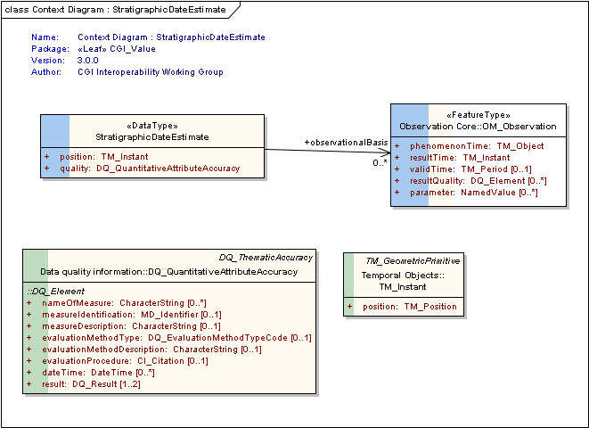

Package GeoSciML/CGI_Utilities/CGI_Value
The GeoSciML "CGI_Value" model provides a generic way of encoding "literal" values, both textual and numeric, which have uncertainty and may be a range. These structures are designed to be able to capture value descriptions as conventionally recorded by geologists.
The Value structures are for when you need
1. a qualifier,
2. to be able to use either single values or ranges, or
3. to express uncertainty on numeric values
4. use numbers or words as alternatives for a single value or in a mixed range
e.g. "usually X", "greater than Y" where X and Y are either a Measure (number with a scale) or Term (word from a vocabulary) or a range constructed from measures and terms
"CGI_GeometricDescriptions" allow describing the planar or linear orientation of a geologic feature. Allows specifying direction by DirectionVector (eg Dip/Dip Direction), compass point (NE), description ("toward fold hinge", "below')
These values are usually obtained as the result of an observation. The description of the associated observation event will provide more detail about the observation method, result quality, etc.
Class Summary |
|
| <<DataType>> Classes | |
CGI_GeometricDescriptionValue
<<DataType>>
|
Description of the planar or linear orientation of a geologic feature. Allows specifying direction by DirectionVector (eg Dip/Dip Direction), compass point (NE), description ("toward fold hinge", "below') |
CGI_LinearOrientation
<<DataType>>
|
Description of the measured orientation of a line. At least one of plunge or trend should not be nil. |
CGI_NumericAgeRange
<<DataType>>
|
Class to represent general age assignment using numeric measurement results. All attributes have cardinality 1; report with nilReason="missing" if a value is absent. |
CGI_NumericRange
<<DataType>>
|
<font color="#0f0f0f">1. Allows specifying a range of numeric values (eg 443.7+-1.5 to 359+-2.5) and a single representative or estimated value. (eg: upper = 443.7+-1.5,lower = 359+-2.5, estimatedValue [mean] = 400). </font> 2. Use the swe:definition attribute (URI in SWE1, ScopedName in SWE2) to describe the statistical type of the quoted measurement (eg, mean, minimum, maximum, median, mode, single measurement). Recommended vocabulary for statistical terms is at http://dictionary.uncertml.org/statistics. <font color="#0f0f0f"> </font><font color="#0f0f0f">3. Where CGI_NumericRange is used to deliver a single numeric value, it should be repeated in both the upper and lower quantity values.</font> 4. Use UCUM where possible for units of measure. |
CGI_PlanarOrientation
<<DataType>>
|
Description of the geometry of a plane. |
CGI_Term
<<DataType>>
|
|
CGI_TermRange
<<DataType>>
|
Allows specifying a range of terms (eg: thick to thin) by specifying an upper (eg: thick) and lower (eg: thin) CGI_TermValue |
CGI_Value
<<DataType>>
|
The Value structures are for when you need 1. a qualifier, 2. to be able to use either single values or ranges, or 3. to express uncertainty on numeric values 4. use numbers or words as alternatives for a single value or in a mixed range e.g. "usually X", "greater than Y" where X and Y are either a Measure (number with a scale) or Term (word from a vocabulary) or a range constructed from measures and terms |
CGI_Vector
<<DataType>>
|
data type for linear orientation with magnitude. Cardinality on magnitude is 1, if magnitude is unknown use CGI_LinearOrientation |
StratigraphicDateEstimate
<<DataType>>
|
an estimate of a point in geologic time and a link to its observational basis |
| <<CodeList>> Classes | |
CodeListValue
<<CodeList>>
|
This class is an empty placeholder for a vocabulary of terms applicable to the GeoSciML element that is being described by CGI_Term. Users are encouraged to use an appropriate vocabulary of terms managed by the CGI vocabularies working group outside of this model. |
ConventionCode
<<CodeList>>
|
This list is an indicative list only of terms used to describe the convention used for the orientation measurement. Users are encouraged to use a vocabulary of terms managed by the CGI vocabularies working group outside of this model. |
DescriptionPurpose
<<CodeList>>
|
Codes used for the specification of the intended purpose/level of abstraction for a given feature or object instance, ie the reason for the existence of the GeologicFeature. Values: instance, typicalNorm, definingNorm. |
DeterminationMethodTerm
<<CodeList>>
|
This class is an empty placeholder for a vocabulary of terms describing the method used to determine the measured orientation. Users are encouraged to use a vocabulary of terms managed by the CGI vocabularies working group outside of this model. |
LinearDirectedCode
<<CodeList>>
|
This list is an indicative example list only of terms used to describe the values to use for terms related to directedness of linear orientations. Users are encouraged to use a vocabulary of terms managed by the CGI vocabularies working group outside of this model. |
PlanarPolarityCode
<<CodeList>>
|
This list is an indicative list only of terms used to describe the values to use for expressing overturned or upright facing of planar orientation measurements. Users are encouraged to use a vocabulary of terms managed by the CGI vocabularies working group outside of this model. |
ValueQualifierCode
<<CodeList>>
|
This list is an indicative example list only of terms used to qualify text values. Users are encouraged to use a vocabulary of terms managed by the CGI vocabularies working group outside of this model. |
Tagged Values |
||
| Tag | Value | Notes |
| xsdDocument | value.xsd | Description: Name of an XML Schema document to create representing the content of this package |
| xsdEncodingRule | iso19136_2007_INSPIRE_Extensions | Values: iso19136_2007 | iso19139_2007 | iso19136_2007_INSPIRE_Extensions Default: iso19136_2007 Description: XML Schema encoding rule to apply |
UML Diagram: Summary diagram : generic values
UML Diagram: Summary diagram : geometric values
UML Diagram: Context Diagram : CGI_GeometricDescriptionValue
UML Diagram: Context Diagram : CGI_LinearOrientation
UML Diagram: Context Diagram : CGI_NumericRange
UML Diagram: Context Diagram : CGI_NumericAgeRange
UML Diagram: Context Diagram : CGI_PlanarOrientation
UML Diagram: Context Diagram : CGI_Term
UML Diagram: Context Diagram : CGI_TermRange

UML Diagram: Context Diagram : CGI_Value
UML Diagram: Context Diagram : CGI_Vector
UML Diagram: Context Diagram : StratigraphicDateEstimate

UML Diagram: Context Diagram : DescriptionPurpose